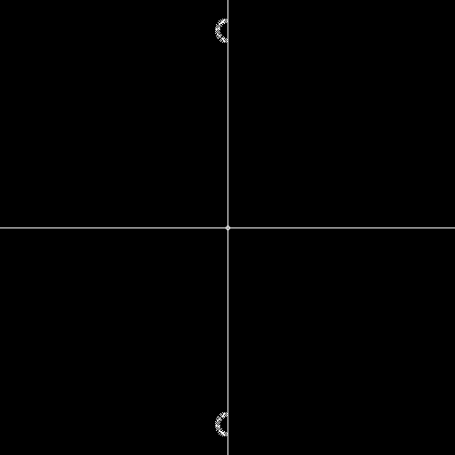
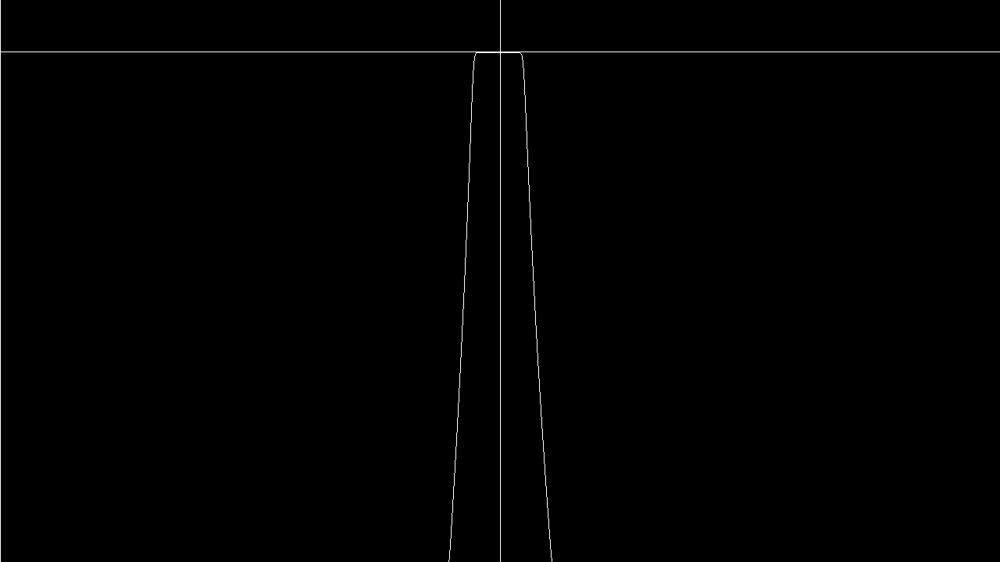
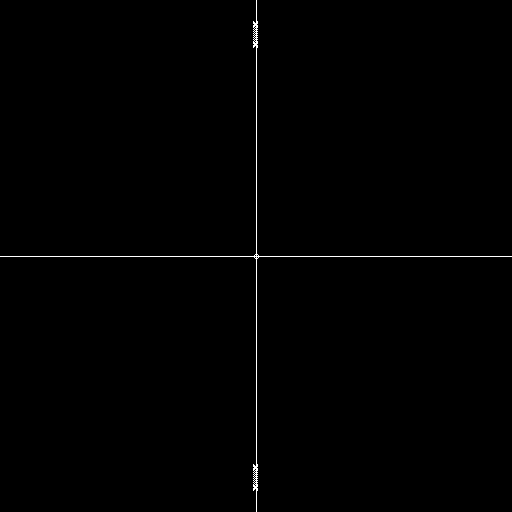
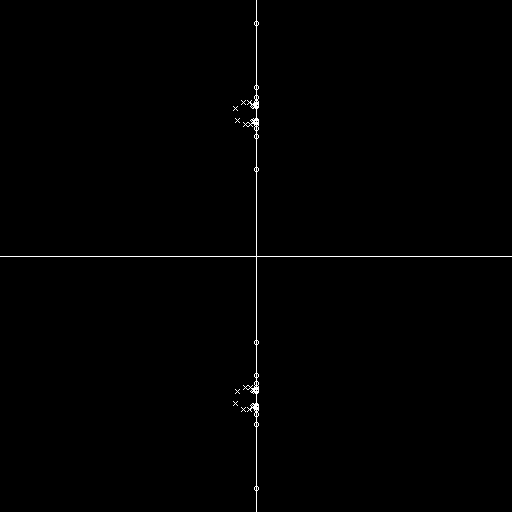

带通滤波器有两个参数，它们有着许多的组合，在这里我使用截止频率wc和Q作为参数。
\[Q=\frac{w_c}{bw} \xrightarrow[]{} bw=\frac{w_c}{Q} \]
第一步我们先映射一个截止频率位于bw的低通滤波器
\[s\xleftarrow[]{}\frac{s}{bw}\]
我们在上面已经推导了低通映射的ZPK，在此不重复。
第二部使用下面的映射函数将低通变为带通，中心频率为wc
\[s\xleftarrow[]{}\frac{s^{2}+w_{c}^2}{s}\]
在这里展开H(s)的过程实在是太长了，因此我只写结论
\begin{equation}\begin{aligned}
H(\frac{s^{2}+wc^{2}}{s})&=\frac{(s^{2}-s\epsilon+w_c^{2})(s^{2}-s\bar{\epsilon}+w_c^{2})}{(s^{2}-sp+w_c^{2})(s^{2}-s\bar{p}+w_c^{2})}*K_f
\end{aligned}\end{equation}
\begin{equation}\begin{aligned}
H(\frac{s^{2}+wc^{2}}{s})&=\frac{(s-0)^{2}}{(s^{2}-sp+w_c^{2})(s^{2}-s\bar{p}+w_c^{2})}*K_f
\end{aligned}\end{equation}
这里我们使用二次方程的通项公式对四个方程直接进行求解，由于它们都有相同的形式，在此用下列方程代替
\[ s^{2}-s*c+w_c^{2}=0 \]
\[ Root_0(c)=\frac{c+\sqrt{c^{2}-4w_c^{4}}}{2} \space\space\space\space
Root_1(c)=\frac{c-\sqrt{c^{2}-4w_c^{2}}}{2} \]
通过一些小小的验证，我们足以发现以下关系
\[ Root_0(c)与Root_0(\bar{c})是共轭复数，对Root_1也是如此 \]
\[ 即Root_0(c)的共轭复数是\overline{Root_0(\bar{c})} \]
因此我们得到以下公式
\[
H(s)=\frac{(s-Root_0(\epsilon))(s-Root_1(\epsilon))(s-\overline{Root_0(\epsilon)})(s-\overline{Root_1(\epsilon)})}{(s-Root_0(p))(s-Root_1(p))(s-\overline{Root_0(p)})(s-\overline{Root_1(p)})}*K_f
\]
\[
H(s)=\frac{(s-0)^{2}}{(s-Root_0(p))(s-Root_1(p))(s-\overline{Root_0(p)})(s-\overline{Root_1(p)})}*K_f
\]
注意 由于我们在将一个ZPK拆成两个ZPK，由上面的公式可以看出Kf是不变的，为了保持ZPK*ZPK的K不变，拆除的ZPK的K应该为原来ZPk的K的开平方。
注意 我们还没有判断映射之后的极点位置是否在右半平面，判断方法即使看实部是否大于0，如果大于则取负即可。
由此写下以下代码
std::vector<ZPK> ProtyleToBandpass(const std::vector<ZPK>& protyle, double fcutoff, double Q) {
double wo = fcutoff * 2 * pi;
double bw = wo / Q;
std::vector<ZPK> ret{protyle.size() * 2};
for (size_t i = 0; i < protyle.size(); ++i) {
// prototype -> lowpass at bw
ZPK s;
{
auto const& ss = protyle[i];
s.k = ss.k * bw * bw;
s.p = ScaleComplex(ss.p, bw);
if (ss.z) {
s.k = ss.k;
s.z = ScaleComplex(*ss.z, bw);
}
}
// lowpass -> bandpass
auto& bp1 = ret[2 * i];
auto& bp2 = ret[2 * i + 1];
if (s.z) {
auto p_delta = std::sqrt(s.p * s.p - 4.0 * wo * wo);
auto z_delta = std::sqrt(*s.z * *s.z - 4.0 * wo * wo);
bp1.p = ScaleComplex(s.p + p_delta, 0.5);
bp2.p = ScaleComplex(s.p - p_delta, 0.5);
bp1.z = ScaleComplex(*s.z + z_delta, 0.5);
bp2.z = ScaleComplex(*s.z - z_delta, 0.5);
bp1.k = std::sqrt(s.k);
bp2.k = std::sqrt(s.k);
}
else {
auto delta = std::sqrt(s.p * s.p - 4.0 * wo * wo);
bp1.p = ScaleComplex(s.p + delta, 0.5);
bp2.p = ScaleComplex(s.p - delta, 0.5);
bp1.z = 0;
bp1.k = std::sqrt(s.k);
bp2.k = std::sqrt(s.k);
}
}
return ret;
}

10hz, Q=5, 20hz FS巴特沃斯零极点

10hz, Q=5, 20hz FS巴特沃斯振幅响应

10hz, Q=5, 20hz FS切比雪夫I零极点

10hz, Q=5, 20hz FS切比雪夫I振幅响应

10hz, Q=5, 20hz FS切比雪夫II零极点

10hz, Q=5, 20hz FS切比雪夫II振幅响应
![https://cn.bing.com/images/search?view=detailV2&ccid=IpGI3MBp&id=A18CF3082EFEC32870548D441CFC0379ED4A055C&thid=OIP.IpGI3MBpeMF84wLyPzz9PwHaEC&mediaurl=https%3A%2F%2Fts1.tc.mm.bing.net%2Fth%2Fid%2FR-C.229188dcc06978c17ce302f23f3cfd3f%3Frik%3DXAVK7XkD%252fBxEjQ%26riu%3Dhttp%253a%252f%252fwww.minidsp.com%252fimages%252fstories%252fapplications%252fbiquad.jpg%26ehk%3DIPZqMGi6UVBIRfMFVr5yFLiq6WQwxWDYucOcsUDWYwM%253d%26risl%3D%26pid%3DImgRaw%26r%3D0&exph=341&expw=626&q=biquad&simid=607988394707994238&FORM=IRPRST&ck=9B234C5368668FDD716EB1B0C1F2D949&selectedIndex=1&itb=0&cw=1296&ch=665&ajaxhist=0&ajaxserp=0](biquad.webp)